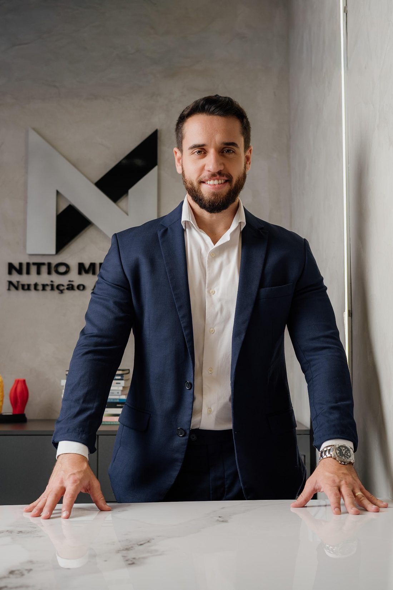

Nutrição
Nutricionistas
Montam o seu plano alimentar, conduzem as consultas e analisam tudo a cada checkpoint quinzenal.
+2.500 pessoasacompanhadas
Estética · Performance · Qualidade de vida
Sem dieta engessada e sem abrir mão da sua vida!
O diferencial: nutricionista, personal trainer e médico trabalhando juntos no seu plano. Sem cardápio engessado, sem abrir mão da vida social e sem efeito sanfona.
Atendimento particular. Não atendemos por plano de saúde ou convênio.
Antes de tudo
Se você se reconheceu em alguma dessas, saiba que é a história mais comum que chega ao consultório. E ela quase nunca é sobre falta de força de vontade.
Depoimentos
5,0 no Google
Os resultados variam de pessoa para pessoa. Depoimentos publicados com autorização. Ler os relatos no Google
O diagnóstico
Dieta pronta, treino copiado e meta sem acompanhamento funcionam por algumas semanas. Depois a rotina real aparece, e o plano não estava preparado para ela.
Aqui o caminho é o inverso: primeiro entender sua rotina, seu histórico, seu metabolismo e seu objetivo. Depois montar a estratégia e monitorá-la a cada quinze dias, com a equipe ao seu lado. Para cada dor, uma resposta concreta:
O que você sente“Já tentei dieta, treino, medicamento e nada se sustenta.”
O que fazemosA falha não foi sua: foi a estratégia fora do seu contexto. Começamos entendendo o que travou.
O que você sente“Meu cardápio é impossível de seguir na minha rotina.”
O que fazemosPlano feito para a sua rotina real, com lista de substituição para você não enjoar.
O que você sente“Perco peso e recupero tudo. Vivo no efeito sanfona.”
O que fazemosCheckpoints quinzenais e ajustes constantes para sustentar o resultado.
O que você sente“Treino e dieta andam separados e não conversam.”
O que fazemosNutricionista, personal e médico no mesmo plano.À depender do plano contratado.
O que você sente“Estou sozinho(a). Ninguém me responde quando eu travo.”
O que fazemosGrupo exclusivo com a equipe e suporte diário no WhatsApp.
O que você sente“Uso (ou quero usar) Mounjaro ou Ozempic e tenho medo de perder músculo e recuperar o peso.”
O que fazemosAcompanhamento específico para preservar massa magra, parte nutricional e planejar a retirada da medicação, junto com a equipe.
O diferencial
À depender do plano contratado.
Na maioria dos acompanhamentos, cada profissional trabalha sozinho e você é quem tenta juntar as peças. Aqui os três olham para o mesmo objetivo e ajustam juntos a sua estratégia.
Nutrição
Montam o seu plano alimentar, conduzem as consultas e analisam tudo a cada checkpoint quinzenal.
Treino
Prescreve o seu treino junto com você nas consultas, e disponibiliza no aplicativo, alinhado à alimentação, à rotina e ao seu objetivo.
Saúde
Acompanha a parte clínica quando necessário: exames e o uso de medicamentos como Mounjaro e Ozempic.
Treino e dieta finalmente conversando, no mesmo grupo de WhatsApp com você.
Os programas · 6 meses ou 12 meses
Uma estratégia individual, construída a partir da sua rotina, do seu histórico, metabolismo e objetivo, com ajustes constantes e uma equipe ao seu lado em cada etapa.
Avaliação física no consultório ou por IA (Body3D) no online
Onde iremos explorar juntos todas as suas dificuldades para que você mantenha uma evolução constante.
Protocolo alimentar fácil de seguir e totalmente individualizado, alinhado às suas necessidades, possibilidades e objetivos. Alterações sempre que necessário.
Seu planejamento na mão, com lista de compras, metas, alerta de hidratação e lista de substituição de alimentos, para não enjoar e garantir os nutrientes.
Formulário dinâmico com fotos, peso, mudança de rotina, fome, sono, digestão e performance. A cada checkpoint, o plano é ajustado.
WhatsApp com todos os profissionais envolvidos no seu caso. Seus problemas serão resolvidos com uma mensagem à nossa equipe.
Grupo fechado em que pacientes compartilham experiências, resultados, conquistas e desafios, novidades e treinos.

Nítio MendesNutricionista
Quem conduz
Nutricionista à frente de um modelo de acompanhamento validado na prática, focado em emagrecimento, definição corporal, hipertrofia, longevidade e performance.
Ele não trabalha com planos genéricos ou fórmulas prontas, mas sim com estratégias personalizadas e um acompanhamento de verdade.
Coautor de NeuroemocionalEditora Lisboa
Autor de Emagreça de Verdade e Evite o Reganho de PesoEbook
Toque em uma área para ler como o acompanhamento funciona nela.
Cada profissional entra no seu processo com uma função clara.
Nutricionista responsável
Conduz as consultas, prescreve o plano alimentar, ajusta cada estratégia, lidera a equipe e acompanha a sua evolução de perto.
CRN-9: a confirmar
Nutricionista da equipe
Ajusta cada estratégia, presta todo suporte necessário nos grupos e analisa cada checkpoint respondido.
CRN: a confirmar
Médicos
Avaliam a parte clínica quando necessário, incluindo exames e o uso de medicamentos como GLP-1.
CRM: a confirmar
Personal trainer
Conduz as consultas, prescreve o treino no aplicativo, alinhado ao plano alimentar e à sua rotina.
CREF: a confirmar
Customer Success
Faz a reunião de boas-vindas, organiza seus grupos e agendas e cuida de você do início ao fim.
O mesmo padrão clínico nos dois formatos.
Presencial · Contagem, MG
No consultório do Novo Eldorado, com acesso fácil para quem vem de Belo Horizonte, Betim e de toda a região metropolitana.
Nítio Mendes - Nutrição AvançadaHorários de atendimento: mediante agendamento.
Online · Brasil e exterior
No online, a composição corporal é estimada por inteligência artificial a partir de fotos e medidas que você envia. É uma estimativa para acompanhar a tendência da sua evolução a cada consulta.
Já acompanhamos pacientes em
Os dois planos têm o mesmo padrão. O que muda é o tempo e, com ele, o número de consultas e checkpoints.
Não atendemos por plano de saúde ou convênio. O atendimento é particular, e você recebe recibo para solicitar reembolso. A liberação e o valor dependem dos critérios do seu plano.
12 meses
Investimento apresentado após a pré-consulta.
6 meses
Investimento apresentado após a pré-consulta.
Cada aplicação é analisada pessoalmente. Na pré-consulta você recebe os valores e as formas de pagamento.
Uma conversa online, sem custo e com duração média de 1 hora, onde o Nítio vai te ouvir com atenção, entender seu momento atual e apresentar o programa que mais faz sentido para a sua vida e seus objetivos.
Com a Luzia, nossa Customer Success, que vai te receber, apresentar como tudo funciona no acompanhamento e garantir que você comece com clareza, segurança e sem nenhuma dúvida.
Você é incluído no Grupo VIP da nossa comunidade ativa de pacientes e recebe a criação do seu Grupo Exclusivo direto com a equipe para suporte diário personalizado.
Preenchimento do formulário completo com sua rotina real, histórico de saúde, tentativas anteriores e objetivos. É a base que permite ao Nítio construir um plano verdadeiramente personalizado para você.
Escolha os horários que encaixam na sua agenda para as consultas iniciais. Atendimento presencial em Contagem, MG, ou online para qualquer lugar do mundo.
Assinatura do contrato do acompanhamento, formalizando o processo e garantindo clareza para os dois lados.
Primeira consulta com o Nítio Mendes. A partir daqui, o seu processo começa de verdade.
Minha experiência com o acompanhamento do Nítio foi excelente. Cheguei no consultório dele no meu auge do peso, triste e muito chateada pesando 82kg, hoje com 1 ano e 4 meses de acompanhamento consegui eliminar 15kg e sigo muito mais motivada a não voltar no que era antes. Obrigada pelo apoio e incentivo Nítio.
Aline Parreiras Lima
Com Nítio ganhei não apenas melhores hábitos na alimentação, mas também melhora da minha ansiedade, melhora do sono, melhora na mentalidade e no estilo de vida e aprendi a comer do jeito certo sem perder o prazer de comer. O cara é muito bom no que faz e vai muito além de só montar dieta: você ganha um estilo de vida novo.
Matheus Vicente
Quero deixar aqui minha recomendação ao Nítio, um profissional extremamente competente e dedicado. Desde o início do acompanhamento, demonstrou atenção aos detalhes, escuta ativa e uma abordagem totalmente personalizada, sempre respeitando minha rotina e objetivos. Um dos grandes diferenciais é o acompanhamento diário, que realmente faz a diferença no processo. E claro, não posso deixar de mencionar os famosos check-ins quinzenais, porque a cada 15 dias é como avançar de fase: você consolida uma evolução real e já parte desse novo patamar para buscar resultados ainda melhores.
Dr. Ewandro Marques
Sou de Itapecerica da Serra/SP e conheci o trabalho dele pelo Instagram, fui acompanhando, fiz uma avaliação e gostei muito do tratamento humanizado. Iniciei o acompanhamento em novembro de 2025 e, desde então, já eliminei 12 kg, sem sofrimento e com qualidade de vida. Mais do que emagrecer, aprendi a me alimentar melhor e passei por uma verdadeira reeducação alimentar. É um profissional extremamente competente, atencioso, com uma equipe maravilhosa onde você tem todo o suporte necessário e, acima de tudo, um grande incentivador.
Vania Rodrigues
Os resultados variam de pessoa para pessoa.
Imagens e relatos publicados com autorização.
Não. O atendimento é exclusivamente particular: não atendemos por convênio nem por plano de saúde.
Você investe diretamente no acompanhamento e, com o recibo que emito, pode solicitar reembolso ao seu plano de saúde, se ele tiver essa cobertura. É um direito seu escolher por quem quer ser acompanhado, e aqui o processo é contínuo e personalizado, sem as restrições de número de consultas que acontecem em muitos convênios. Para saber o valor do reembolso disponível, entre em contato com a central do seu plano e pergunte sobre cobertura para nutricionista particular.
Os primeiros sinais costumam aparecer nas primeiras semanas, como melhora de disposição, aumento da performance, mais controle alimentar e sensação de organização. Resultados visuais ficam mais evidentes entre 20 e 30 dias. O ponto central aqui não é só o resultado rápido, e sim conseguir sustentar esse resultado sem efeito sanfona. O processo é construído para evoluir de forma contínua, respeitando seu ponto de partida, sua rotina e sua adesão.
A maioria das pessoas que entra no acompanhamento já tentou dieta, treino, aplicativo ou acompanhamento anterior. O que normalmente falhou não foi a pessoa, foi a estratégia aplicada fora do contexto real dela. Aqui o trabalho começa entendendo o que já foi tentado, o que travou seus resultados e o que precisa ser ajustado para que o processo funcione na sua vida, não em uma rotina idealizada.
O acompanhamento não é pensado para uma rotina perfeita, e sim para a sua rotina real. O plano é ajustado à sua agenda, compromissos, vida social e contexto atual. O foco não é perfeição, é constância bem orientada. Por isso o acompanhamento e os ajustes são parte central do processo.
Mudanças de rotina são esperadas, não exceção. Viagens, trabalho, eventos e imprevistos fazem parte da vida. O acompanhamento existe justamente para adaptar a estratégia quando isso acontece, e não para te cobrar perfeição.
O suporte é diário e direto. Você tem acesso a mim e à equipe para dúvidas, ajustes e alinhamentos sem precisar esperar pela próxima consulta. Além disso, os checkpoints quinzenais garantem que o processo nunca fique à deriva.
Sim. O acompanhamento online segue exatamente o mesmo padrão clínico do presencial. Temos pacientes em mais de 13 países e o resultado é equivalente quando existe comprometimento dos dois lados. A única diferença é a avaliação física, que no online é feita por fotos e medidas enviadas pelo paciente, com estimativa de composição corporal por inteligência artificial.
Não é obrigatório, mas se você já tiver exames recentes, eles ajudam a personalizar ainda mais o processo desde o início. Caso não tenha, prescrevemos novos exames de sangue, com base no seu perfil clínico.
Sim. Atendimento online para qualquer país. Já acompanhamos pacientes em Canadá, EUA, Alemanha, Austrália, Portugal, Espanha e Inglaterra, entre outros.
Sim. O acompanhamento é clínico e integrado, com equipe multidisciplinar que inclui equipe médica, educador físico e nutricionistas especializados. Condições de saúde específicas são avaliadas individualmente desde o início do processo, com acompanhamento médico quando necessário, e a estratégia é adaptada para cada caso.
Não. A estética é um dos objetivos possíveis, ao lado de performance e qualidade de vida. Acompanhamos emagrecimento, definição corporal e hipertrofia, mas também longevidade, saúde hormonal, saúde da mulher, gestação, pós-bariátrica, saúde mental e performance esportiva e cognitiva. O ponto de partida é sempre o seu objetivo e o seu momento de saúde.
No plano anual estão inclusos 6 consultas nutricionais com o Nítio Mendes, 6 consultas com educador físico (à depender do plano contratado), 24 checkpoints com ajustes quinzenais, plano alimentar individualizado, aplicativo exclusivo de dieta, análise e prescrição de exames, prescrição de suplementos e manipulados, suporte diário via WhatsApp em horário comercial, o grupo exclusivo com a equipe e o Grupo VIP. O plano semestral tem o mesmo padrão, com 4 consultas nutricionais, 4 com educador físico (à depender do plano contratado) e 12 checkpoints.
Não estão inclusos os custos de terceiros: a realização dos exames laboratoriais e a compra de suplementos e manipulados. A prescrição está inclusa.
Leva cerca de 3 minutos. Cada aplicação é analisada pessoalmente e, se for o seu momento, a equipe chama você no WhatsApp.